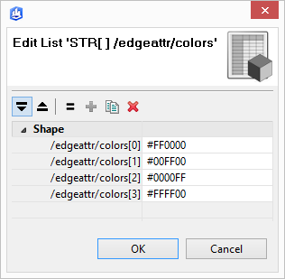
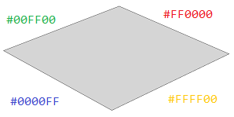
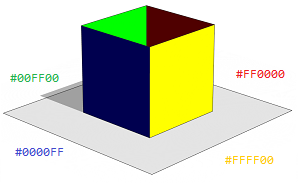
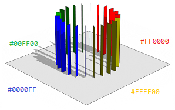
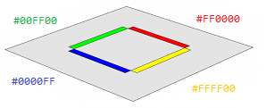

edgeAttr functions
attributeName string Name of the edge attribute array: /edgeattr/attributeName.
Returns one sampled element of the edge attribute array. If no attribute /edgeattr/attributeName exists, or if the requested type does not match, a default value is returned: 0, "", or false.
The edgeAttr functions return the element of an edge attribute array that best corresponds to the current shape geometry.
Edge attributes
Edge attributes allow information to be stored on the face edges of an initial shape. They are specified as arrays in face order. The first element sets an attribute for the first edge of the first face, the second element sets an attribute for the second edge of the first face, and so on. Shared edges are considered separately on later encounters. Edge attribute arrays start with the prefix /edgeattr/ followed by attributeName. In CityEngine these arrays are set as object attributes on an initial shape.
Sampling via edgeAttr functions
Edge attributes can be sampled in CGA. The current shape geometry is projected on the outline of the initial shape. The edge attribute with the highest projected coverage is returned as the result of an edgeAttr function. The projection works in 2D with respect to the average plane of the initial shape, and its direction follows the general orientation of the current shape geometry.
Related
Examples
Edge attribute array


A rectangular shape has a string array with colors set as edge attributes.
Sampling on faces

getColor = edgeAttr.getString("colors")
Lot --> primitiveCube(10, 10, 10)
comp(f) { side : color(getColor) Face. }
The side faces of a cube are projected along their normals onto the face edges of the initial shape.
Sampling on edges

Edge --> s('1,0,1)
primitiveQuad
Lot --> primitiveCylinder(22, 5, 10)
comp(e) { vertical : color(getColor) Edge }
The vertical edges of a cylinder are projected along their normals onto the face edges of the initial shape. Edges also have a normal defined by the average of neighboring face normals. After a component split, the normal coincides with the z-axis of the component scope.
Sampling on face edges

Lot --> primitiveQuad(10, 10)
comp(fe) { all : color(getColor) Edge }
All face edges of a quad are projected along their normals onto the face edges of the initial shape. Face edges also have a normal that points out of the face orthogonally to the edge and face normal. After a component split, the normal coincides with the z-axis of the component scope.
See the setbackPerEdge operation for further applications.